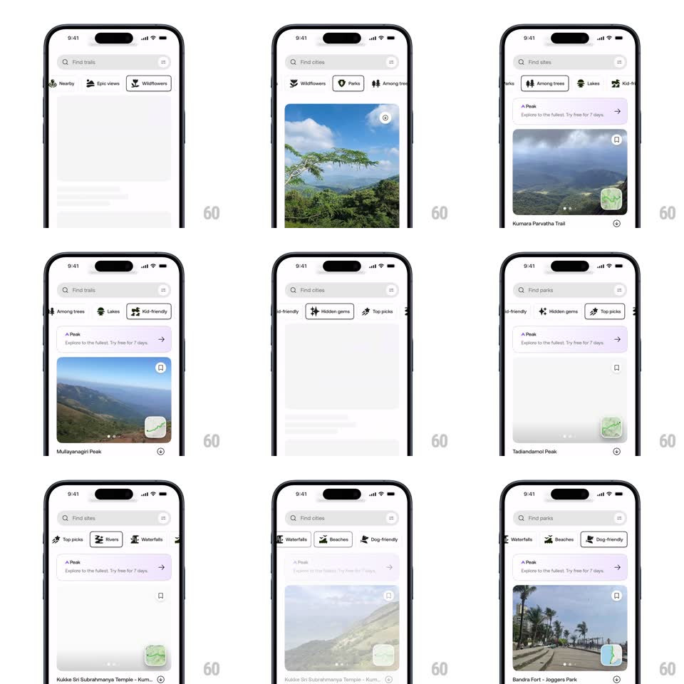

Media
Frame-by-frame

Rebuild this animation 1:1: AllTrails' category tabs - tapping a chip (Nearby, Epic views, Wildflowers, Parks, Among trees, Lakes, Kid-friendly, Hidden gems, Top picks, Rivers, Waterfalls, Beaches, Dog-friendly) plays a playful icon micro-animation, auto-centers the chip, and swaps the trail cards through a skeleton shimmer.

Rebuild this animation 1:1: AllTrails' category tabs - tapping a chip (Nearby, Epic views, Wildflowers, Parks, Among trees, Lakes, Kid-friendly, Hidden gems, Top picks, Rivers, Waterfalls, Beaches, Dog-friendly) plays a playful icon micro-animation, auto-centers the chip, and swaps the trail cards through a skeleton shimmer.
## Integration
Integration: stack-agnostic spec - springs given as stiffness/damping, timed motions as duration + curve; map every value to your framework and animation library of choice.
## Scene
Light explore screen: search field whose placeholder matches the tab ("Find trails", "Find parks"), a horizontal chip row with icons, a "Peak" promo banner, and trail cards with big photos, names, and a mini-map thumbnail.
## Motion spec
Pattern: chip select with icon play and skeleton swap, ~700ms.
- Icon: the tapped chip's icon performs its signature motion (trees bounce, waves ripple, paw wiggles) - a 2-beat spring rotation/scale (+-12deg, scale 1 -> 1.15 -> 1, 400ms) while the chip fills black and its label inverts.
- Center: the chip row scrolls so the selected chip rests centered (spring ~320/24, 350ms).
- Content: old cards fade (150ms), gray skeleton blocks shimmer (500ms, sweeping highlight), then new photo cards rise in staggered (60ms, 300ms each) with images fading in as they load.
- Search: the placeholder crossfades to the tab's noun (200ms).
## Calibration
- Only the selected chip animates its icon; neighbors stay static.
- Skeleton appears for every tab switch, even cached ones (shortened to 200ms).
## Reduced motion
Icons change without the spring play; cards crossfade without skeleton.
## Don't miss
- Each icon has its own motion personality - do not give every chip the same bounce.
- The row's auto-centering is part of the gesture, not a separate scroll.